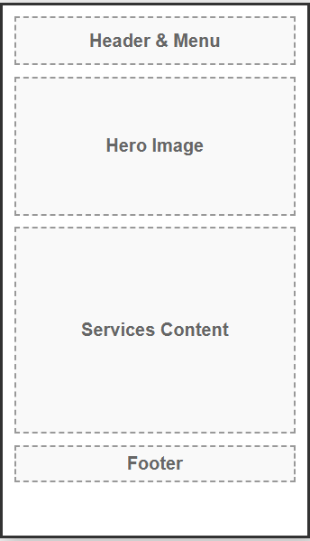
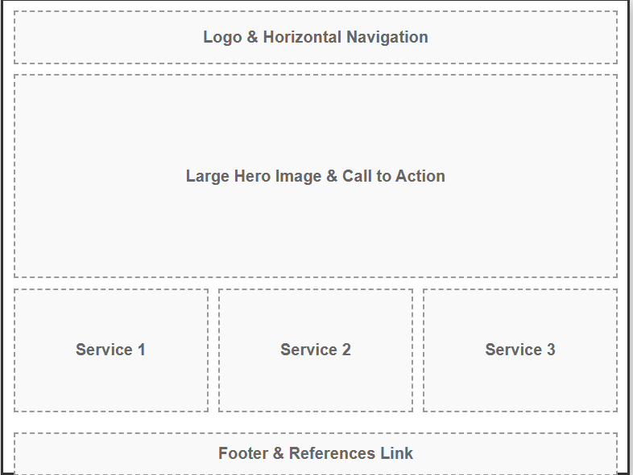

Site Name & Branding
Name: Pioneer Global Logistics
Reason: This name conveys authority, reach, and forward-thinking momentum in the freight and shipping industry.
Domain: pioneer-global-logistics.com (Hypothetical)
Site Purpose
The site serves as a professional corporate hub to showcase our global freight, warehousing, and supply chain services. It will generate client leads through a "Request a Quote" call-to-action and provide tracking resources for current clients.
Target Audience Scenarios
- Scenario 1: "What types of international ocean freight services does Pioneer Global Logistics offer for large commercial shipments?"
- Scenario 2: "How can I quickly request a custom quote to transport a container from the port to my warehouse?"
Color Schema
The selected colors are designed to evoke trust, corporate stability, and action.
Primary: Navy Blue
#0A2540
(Header, Footer, Headings)
Accent: Action Orange
#FF6B35
(Buttons, Links, Highlights)
Background: Off-White
#F8F9FA
(Main page background)
Typography
Headings: Montserrat. A clean, modern geometric sans-serif that looks highly professional and stable for a corporate site.
Body Text: Open Sans. Highly readable on all devices, ensuring service descriptions and contact forms are easy to navigate.
Wireframes
Below are the basic layout structures for the Home Page.
Mobile View

Note: Stacked layout, hamburger menu, clear CTA button at the top.
Desktop View

Note: Horizontal navigation, hero image with left-aligned text, multi-column service highlights.